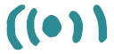

Ici vous pouvez chattez avec les membres du garage connectés, vous retrouver pour travailler à distance en visioconférence, et accéder aux outils du garage en se référent aux différents logos expliqués ci-dessous.
 Pour faire apparaître une fenêtre du board rejoindre cette icône: et appuyer sur espace
Pour faire apparaître une fenêtre nextcloud rejoindre cette icône: et appuyer sur espace
Pour faire apparaître la documentation du garage rejoindre cette icône: et appuyer sur espace
Pour rejoindre une visio conférence, se rendre à une table et appuyer sur espace
Enfin, il existe des zones de silence pour rester au calme: dans la salle de gauche avec les canapés et en bas au bord du lac.
Bonne balade!